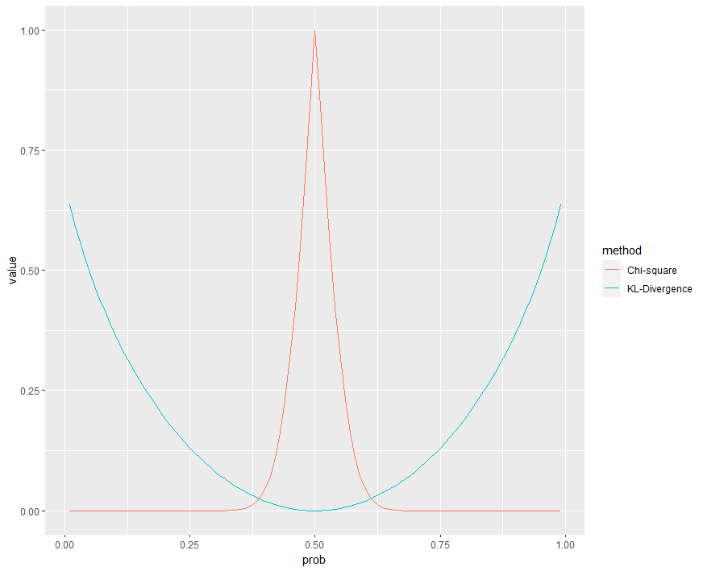

최근 쿨백-라이블러 발산의 글을 작성한 이후, \(\chi^2\) 검정에도 goodness of fit을 통해 관측 데이터가 분포를 따르는지 확인 할 수 있는데,
이 두가지 방식에 어떠한 연관점이 있나 확인해보았습니다. 유감스럽게도 두 방식 모두 분포간의 차이를 측정할 수 있는 방법이지만, 둘 사이에 직접적인 수학 관계는 없다고 합니다.
분명 관계가 있을 것 같은데, 없다고 하니.. 부족한 수학 실력을 뒤로하고 찜찜한 마음으로 두 방식에 대해 시뮬레이션해보았습니다.
# 동전 던지기 결과를 관찰한 데이터를 생성합니다. 앞면은 1, 뒷면은 0으로 표현합니다.
observed <- c(rep(1, 55), rep(0, 45))
observed2 <- c(rep(1, 80), rep(0, 200))
# 카이 제곱 적합도 검정을 수행합니다.
# 앞면과 뒷면이 나올 이론적 확률은 각각 0.5입니다.
chisq.test(table(observed), p = c(0.5, 0.5))
chisq.test(table(observed2), p = c(0.5, 0.5))
# KL 발산을 계산합니다.
# 베르누이 분포의 이론적 확률을 설정합니다.
expected_prob <- c(0.5, 0.5)
# 관찰된 데이터의 확률을 계산합니다.
observed_prob <- table(observed) / length(observed)
observed_prob2 <- table(observed2) / length(observed2
)
# KL 발산을 계산합니다.
KL_divergence <- sum(observed_prob * log(observed_prob / expected_prob))
KL_divergence2 <- sum(observed_prob2 * log(observed_prob2 / expected_prob))첫번째 코인의 경우, Chi-squared test의 경우 p-value 0.32, KL-divergence의 경우 0.005
두번째 코인의 경우, Chi-squared test의 경우 p-value 7.4e-13, KL-divergence의 경우 0.095
로 계산됩니다.
chi_arr <- numeric(99)
kld_arr <- numeric(99)
for(i in 1:99) {
observed <- c(rep(1,i), rep(0,(100 - i)))
expected_prob <- c(0.5, 0.5)
observed_prob <- table(observed) / length(observed)
test <- chisq.test(table(observed), p = expected_prob)
chi <- test$p.value
kld <- sum(observed_prob * log(observed_prob / expected_prob))
chi_arr[i] <- chi
kld_arr[i] <- kld
}
library(tidyverse)
prob_arr <- (1:99)/100
plot_dt <- tibble(prob = prob_arr, pvalue = chi_arr, kld = kld_arr)
plot_dt <- pivot_longer(plot_dt,cols = c("pvalue", "kld"), names_to = "method")
plot_dt |> ggplot(aes(x = prob, y = value, color = method)) + geom_line()p(H) 가 0.01 ~ 0.99 까지의 p-value와 KL-divergence의 값을 시각화한 값입니다.

Chi-square 검정의 경우 0.4 부근에서 급격하게 치솟는 모습을 볼 수 있으나, KL-divergence의 경우 2차 곡선의 형태를 보입니다.
Chi-square 검정은 검정이라는 이름답게 다소 보수적인 모습을 볼 수 있고
KL-divergence의 경우 주로 데이터가 얼마나 분포에 가까운지에 대한 거리 metric으로 주로 사용되는 만큼 완만함을 알 수 있습니다.